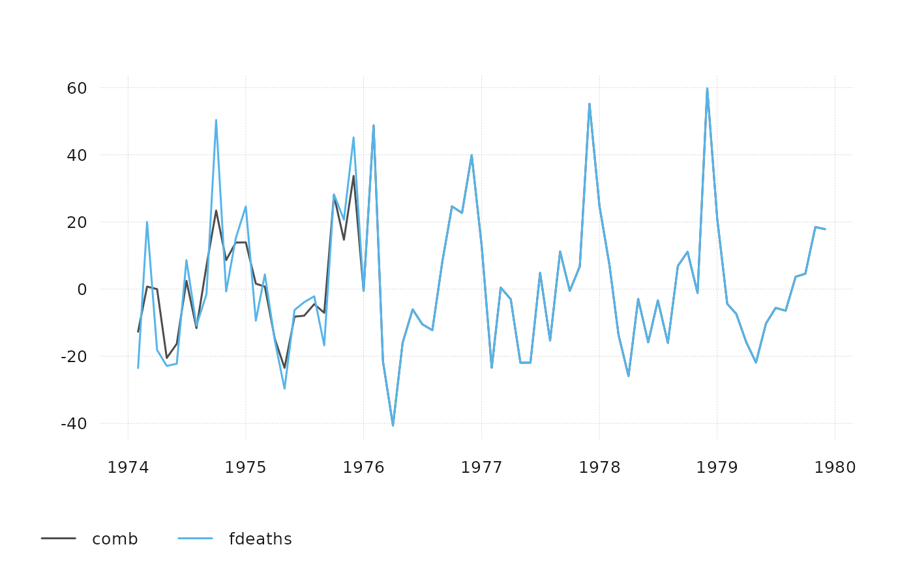

Combine time series to a new, single time series. ts_bind combines time
series as they are, ts_chain chains them together, using percentage change
rates.
Value
a ts-boxable object of the same class as the input, i.e., an object
of class ts, xts, zoo, zooreg, data.frame, data.table, tbl,
tbl_ts, tbl_time, tis, irts or timeSeries.
If series of different classes are combined, the class of the first series
is used (if possible).
Details
In data frame objects, multiple time series are stored in a long data frame.
In ts and xts objects, time series are combined horizontally.
See also
ts_c to collect multiple time series
Examples
ts_bind(ts_span(mdeaths, end = "1975-12-01"), fdeaths)
#> Jan Feb Mar Apr May Jun Jul Aug Sep Oct Nov Dec
#> 1974 2134 1863 1877 1877 1492 1249 1280 1131 1209 1492 1621 1846
#> 1975 2103 2137 2153 1833 1403 1288 1186 1133 1053 1347 1545 2066
#> 1976 767 1141 896 532 447 420 376 330 357 445 546 764
#> 1977 862 660 663 643 502 392 411 348 387 385 411 638
#> 1978 796 853 737 546 530 446 431 362 387 430 425 679
#> 1979 821 785 727 612 478 429 405 379 393 411 487 574
ts_bind(mdeaths, c(2, 2))
#> Jan Feb Mar Apr May Jun Jul Aug Sep Oct Nov Dec
#> 1974 2134 1863 1877 1877 1492 1249 1280 1131 1209 1492 1621 1846
#> 1975 2103 2137 2153 1833 1403 1288 1186 1133 1053 1347 1545 2066
#> 1976 2020 2750 2283 1479 1189 1160 1113 970 999 1208 1467 2059
#> 1977 2240 1634 1722 1801 1246 1162 1087 1013 959 1179 1229 1655
#> 1978 2019 2284 1942 1423 1340 1187 1098 1004 970 1140 1110 1812
#> 1979 2263 1820 1846 1531 1215 1075 1056 975 940 1081 1294 1341
#> 1980 2 2
ts_bind(mdeaths, 3, ts_bind(fdeaths, c(99, 2)))
#> Jan Feb Mar Apr May Jun Jul Aug Sep Oct Nov Dec
#> 1974 2134 1863 1877 1877 1492 1249 1280 1131 1209 1492 1621 1846
#> 1975 2103 2137 2153 1833 1403 1288 1186 1133 1053 1347 1545 2066
#> 1976 2020 2750 2283 1479 1189 1160 1113 970 999 1208 1467 2059
#> 1977 2240 1634 1722 1801 1246 1162 1087 1013 959 1179 1229 1655
#> 1978 2019 2284 1942 1423 1340 1187 1098 1004 970 1140 1110 1812
#> 1979 2263 1820 1846 1531 1215 1075 1056 975 940 1081 1294 1341
#> 1980 3 2
ts_bind(ts_dt(mdeaths), AirPassengers)
#> time value
#> <Date> <num>
#> 1: 1949-01-01 112
#> 2: 1949-02-01 118
#> 3: 1949-03-01 132
#> 4: 1949-04-01 129
#> 5: 1949-05-01 121
#> ---
#> 212: 1979-08-01 975
#> 213: 1979-09-01 940
#> 214: 1979-10-01 1081
#> 215: 1979-11-01 1294
#> 216: 1979-12-01 1341
# numeric vectors
ts_bind(12, AirPassengers, c(2, 3))
#> Jan Feb Mar Apr May Jun Jul Aug Sep Oct Nov Dec
#> 1948 12
#> 1949 112 118 132 129 121 135 148 148 136 119 104 118
#> 1950 115 126 141 135 125 149 170 170 158 133 114 140
#> 1951 145 150 178 163 172 178 199 199 184 162 146 166
#> 1952 171 180 193 181 183 218 230 242 209 191 172 194
#> 1953 196 196 236 235 229 243 264 272 237 211 180 201
#> 1954 204 188 235 227 234 264 302 293 259 229 203 229
#> 1955 242 233 267 269 270 315 364 347 312 274 237 278
#> 1956 284 277 317 313 318 374 413 405 355 306 271 306
#> 1957 315 301 356 348 355 422 465 467 404 347 305 336
#> 1958 340 318 362 348 363 435 491 505 404 359 310 337
#> 1959 360 342 406 396 420 472 548 559 463 407 362 405
#> 1960 417 391 419 461 472 535 622 606 508 461 390 432
#> 1961 2 3
ts_chain(ts_span(mdeaths, end = "1975-12-01"), fdeaths)
#> Jan Feb Mar Apr May Jun Jul
#> 1974 2134.0000 1863.0000 1877.0000 1877.0000 1492.0000 1249.0000 1280.0000
#> 1975 2103.0000 2137.0000 2153.0000 1833.0000 1403.0000 1288.0000 1186.0000
#> 1976 2055.2815 3057.4656 2400.9546 1425.5668 1197.7977 1125.4475 1007.5435
#> 1977 2309.8470 1768.5603 1776.5992 1723.0065 1345.1777 1050.4176 1101.3307
#> 1978 2132.9909 2285.7302 1974.8923 1463.0817 1420.2075 1195.1180 1154.9235
#> 1979 2199.9818 2103.5149 1948.0960 1639.9377 1280.8664 1149.5642 1085.2529
#> Aug Sep Oct Nov Dec
#> 1974 1131.0000 1209.0000 1492.0000 1621.0000 1846.0000
#> 1975 1133.0000 1053.0000 1347.0000 1545.0000 2066.0000
#> 1976 884.2802 956.6304 1192.4384 1463.0817 2047.2425
#> 1977 932.5136 1037.0195 1031.6602 1101.3307 1709.6083
#> 1978 970.0285 1037.0195 1152.2438 1138.8457 1819.4734
#> 1979 1015.5824 1053.0973 1101.3307 1304.9831 1538.1115
# \donttest{
ts_plot(ts_pc(ts_c(
comb = ts_chain(ts_span(mdeaths, end = "1975-12-01"), fdeaths),
fdeaths
)))

# }